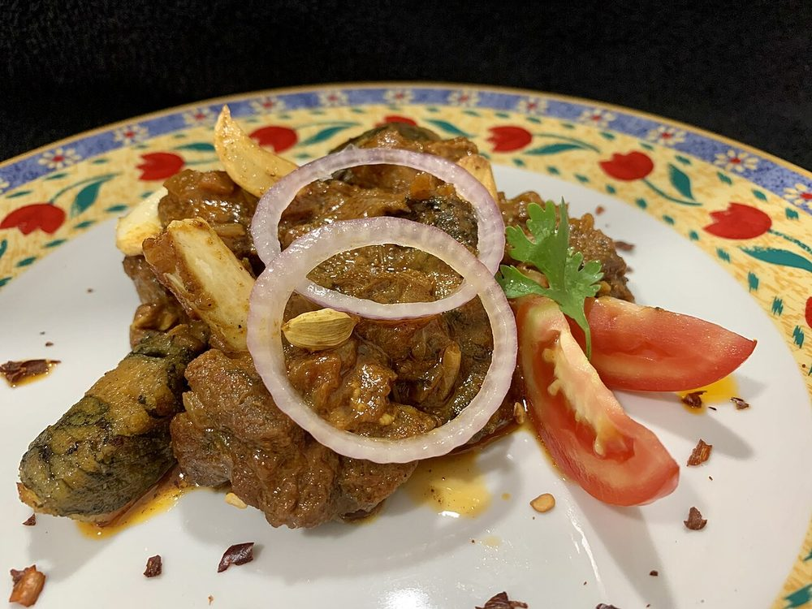

Contains: milk, tree nuts
Checked against the ingredient list for milk, egg, fish, crustaceans, tree nuts, peanuts, sesame, mustard, soy and gluten. Nothing else is checked, and brands vary, so read the label on anything you have not bought before.
Ingredients
Quantities for 6.
- 1.5 litres, full-fat Milkfull-fat only; skimmed milk will not thicken
- 60g, rinsed and soaked 30 minutes Basmati Rice
- 120g Sugar
- 6 pods, seeds ground Cardamom
- a generous pinch, soaked in 2 tbsp warm milk Saffron
- 2 tbsp, slivered Almonds
- 1 tbsp, slivered Pistachiosoptional
- 1 tsp, to grease the pan Gheeoptional
- a scraping Nutmegoptional
Cookware
stovetop
Before you start
- Soak the rice 30 minutes, then drain and crush it lightly between your palms so a few grains break. The broken starch is what thickens doodhpak.
- Rub the base of the heavy pan with ghee before the milk goes in. It is the simplest insurance against catching.
- Steep the saffron in warm milk for at least 10 minutes so it gives up its colour.
Method
- Grease a heavy-bottomed pan with the ghee and bring the milk to a boil over medium heat, stirring so it does not catch.
- Add the drained rice and lower the heat to a bare simmer.
- Cook uncovered for 40-45 minutes, stirring every 4-5 minutes and scraping the base and sides each time.Scrape the sides back in as the milk skins. Those scrapings are what give doodhpak its grainy richness.
- When the milk has reduced by about a third and coats the back of a spoon, the rice should be completely soft and starting to break.
- Add the sugar and stir 5 minutes. The mixture will loosen noticeably before it thickens again.Sugar always goes in after the rice is soft. Added early, the grains stay firm no matter how long you cook.
- Stir in the saffron milk and the ground cardamom and simmer 5 minutes more.
- Add the slivered almonds and cook a final 3 minutes. It should be pourable but leave a clear trail behind the spoon.Stop while it still looks slightly loose. Doodhpak thickens a great deal as it cools.
- Take off the heat, grate over a scraping of nutmeg and scatter the pistachios.
- Cool to room temperature, then chill at least 3 hours. Serve cold with hot puri.
Storage
Keeps 3 days refrigerated in a covered container. It sets firm when cold; loosen with 2-3 tbsp of cold milk and stir well before serving rather than reheating.
Nutrition Low estimate
| Per serving38 g | Per 100 g | |
|---|---|---|
| Calories | 164+ kcal | 429+ kcal |
| Protein | 2.3+ g | 6+ g |
| Carbohydrate | 29.8+ g | 78+ g |
| of which sugars | 20.4+ g | 53+ g |
| Fibre | 1.0+ g | 3+ g |
| Fat | 4.5+ g | 12+ g |
| of which saturated | 0.9+ g | 2+ g |
| of which unsaturated | 3.4+ g | 9+ g |
The + means ingredients given to taste rather than by weight are counted as zero, so the true figure is a little higher than shown. A rough guide only. A large part of this ingredient list is given to taste rather than by weight, or much of what is weighed is not eaten. Ingredients given to taste rather than by weight are counted as zero, so the real figure is a little higher than this. The + says so. Estimated from raw ingredients using USDA FoodData Central. Cooking changes are not modelled, and added salt is excluded, so sodium is not given.
Written and checked against sources, not cooked in a test kitchen. Times, yields and keeping times are guides, and the allergen and nutrition figures are worked out from the ingredient list rather than measured. Use your own judgement, particularly on doneness and on anything you are storing or reheating. More in About.